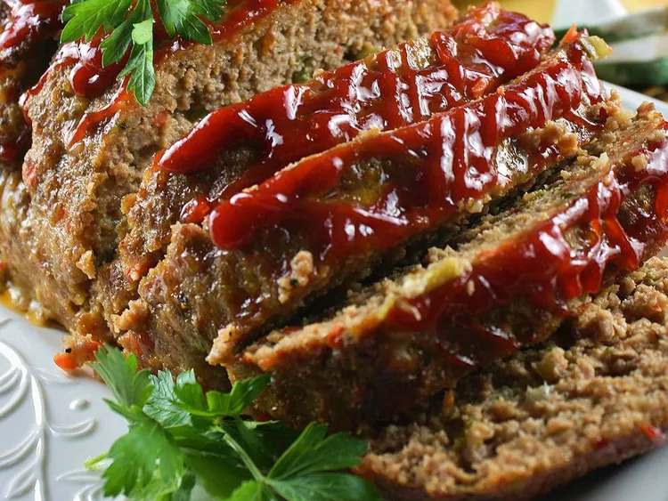

ITALIAN STYLE TURKEY

ingredients
- 1 Ib ground turkey
- 1/2 cup breadcrumbs
- 1/4 cup grated parmesan chesse
- 1/4 cup chooped fresh parsley
- 1 egg, beaten
- 1/2 tsp salt
- 1/4 tsp black pepper
- 1/2 cup tomatoe sauce,divided
- 1/2 cup shredded mozzarella chesse
method of preparation
- pregeat your oven to 350degF (175degC)
-
in a large bowl,combine the ground turkey, breadcrumbs,grated parmesan
chesse, chopped parsley, beaten egg, salt,pepper, and half of the
tomatoe sauce. mix until well combined.
- transfer the mixture to a loaf pan and shape into a loaf
- spread the remaining tomato sauce over the top of the loaf
- sprinkle the shredded mozzarella chesse evenly over the sauce
- bake for about 1 hour
- let it rest for few minutes before serving.
TO HOMEPAGE